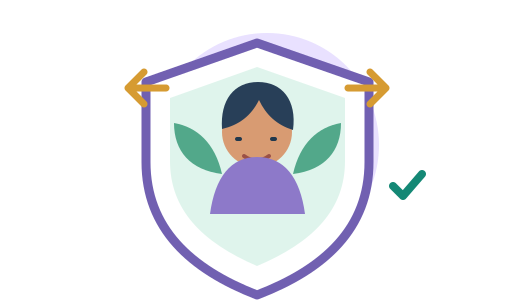

Decisiones y bienestar
Prevención del consumo de sustancias psicoactivas
Ideas para responder a la presión, cuidarse en grupo y buscar orientación.
Guía, videos y 6 juegosInformación y videos Ver juegosMaterial para las campañas de prevención de ambos colegios, con actividades pensadas para cada contexto.
Eje común en los dos colegios
Elige un tema para ver sus juegos y materiales.
Ideas para responder a la presión, cuidarse en grupo y buscar orientación.
Guía, videos y 6 juegosInformación y videos Ver juegosCómo reconocer señales de alerta, escuchar y buscar apoyo seguro.
Guía, videos y 4 juegosInformación y videos Ver juegos
Información sobre límites, consentimiento, seguridad digital y búsqueda de apoyo.
Guía y videos educativosConocer la campaña Ir al juegoAprende a desplazarte con atención y a cuidar a peatones, ciclistas y pasajeros.
Guía, videos y memorama interactivo Información y videos Jugar Wordle vialListos para jugar, también sin internet
Las actividades de las tres campañas están disponibles para ambos colegios. Proyecta la pantalla y roten quién maneja el computador y quién propone.
Presión de grupo, decisiones seguras y apoyo entre pares.
Encuentren parejas idénticas con ideas para poner límites, cuidarse y pedir ayuda.
Jugar en grupo →Armen un mural de bienestar intercambiando piezas y resolviendo tres tableros cada vez más grandes.
Armar el mural →Recoge objetos que abren la salida, evita las presiones y cuida tus tres vidas.
Jugar en grupo →Reúnan apoyos, sorteen obstáculos y encuentren una salida segura en equipo.
Jugar en grupo →Esquiva presiones y reúne apoyos en este reto rápido para jugar por turnos.
Jugar el reto →Escuchar, creer, proteger y buscar acompañamiento.
Recorre escenarios, supera retos y encuentra rutas de cuidado con el grupo.
Jugar en grupo →Encuentren cartas idénticas con mensajes de cuidado y apoyo seguro.
Jugar en grupo →Explora escenarios, encuentra pistas y descubre cómo activar una red de apoyo.
Resolver el caso →Practica cómo acompañar a alguien con respeto y conectar con una persona adulta segura.
Explorar la historia →Límites personales, consentimiento y búsqueda de ayuda segura.
Encuentren parejas idénticas sobre respeto, consentimiento y cómo pedir apoyo.
Jugar en grupo →Una base compartida, dos contextos
Las campañas de consumo, violencia intrafamiliar y abuso sexual son el eje común. Aquí se muestra el énfasis adicional identificado para cada colegio.
Las campañas de consumo, violencia intrafamiliar y abuso sexual son el eje de trabajo actual. Docentes pueden preparar exposiciones y estudiantes explorar los recursos disponibles.
Abrir la página para instalar la appAdemás de las campañas compartidas, tiene un espacio para motivación, proyecto de vida, ICFES y exploración de opciones de educación superior, con herramientas para docentes y estudiantes.
Acompañar y conectar
Escuchar con respeto y acercar a alguien a una persona de confianza puede ser un primer paso.
Explora espacios y rutas de apoyo. Antes de usarlo en una actividad, revisa que la información local esté actualizada y verificada.
No pidan relatos personales ni presionen a quien no quiera hablar. Si alguien necesita apoyo, acompáñenle con una persona adulta de confianza.
Practicar cómo acompañar →